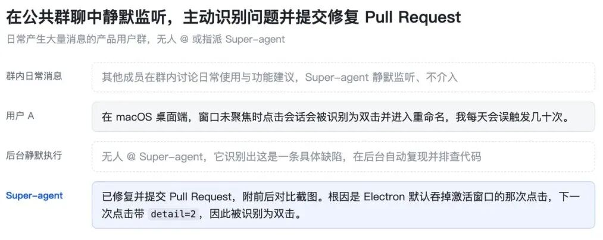
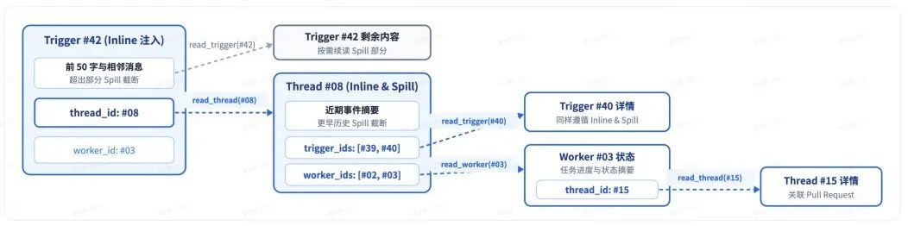

Super-agent 设计探索：迈向更自主的 Agent 系统
文献来源：DeepSeek 产品部 DeepSeek Harness 团队（2026-10-31）
开源原型：dsh-superagent-prototype
核心主题：打破传统 Agent 与“单次手动会话（Session）”的强绑定，运用经典计算机系统工程思想，构建跨会话保持上下文、多任务并发推进、事件驱动主动响应、存算环境解耦的连续自主实体。
1. 为什么需要 Super-agent？四大基础特征
现有单会话 Agent 的天花板
过去一年以 Coding Agent 为代表的单任务 Agent 已经证明：模型能够熟练调用工具解决复杂工程问题。然而，现存主流 Agent 依然以单一 Session 为基本单位：
- 人脑沦为路由器：不同 Session 彼此隔离。当用户并行推进多项工作时，必须在多个会话之间来回切换并手动同步上下文。一个人通常只能勉强维持 3 到 5 个活跃 Session。
- 瓶颈发生转移：单任务的上限取决于模型能力，但多任务和长期协作的上限取决于人的注意力。
- 简单外挂无法治本：在本地单会话上通过 CLI、MCP 或外部连接器做简单拼凑，依然无法摆脱单会话同步阻塞、多任务上下文混乱、本地设备休眠即失联的缺陷。
Super-agent 的四大核心特征
要打破人脑维护 Session 的负担，必须让 Agent 成为一个能跨信道保持上下文、并行推进任务的连续实体：
- 连续（Continuous）：跨 IM、GitHub、邮件等多信道体感始终如一。用户无需关心“Session A 里是否有信息 B”。
- 高效（Efficient）：交互秒级响应，无需等待上一条耗时任务执行完毕，即可接收并推进下一条指令。
- 主动（Proactive）：由环境半结构化事件（Trigger）驱动，持续感知信息流并主动推进，无需介入时保持安静。
- 持久（Persistent）：始终在线、直接挂载真实工作环境，在长期运行中遭遇异常时具备自愈能力。


Super-agent 整体系统架构总览
单靠单个 ReAct Loop 无法兼顾这四个特征。DeepSeek 借鉴了传统计算机系统的成熟设计，构建了五大支撑模块：

2. 双层架构：Router 与 Worker 的职责解耦
连续性与吞吐量的根本权衡（Trade-off）
- 全放一个 Session：上下文最连续，但受限于单 Loop 串行速度，吞吐极低，且多任务细节混杂相互污染。
- 每件事新开 Session：并发吞吐高，但任务割裂、丢失全局上下文，且多个 Session 各自回复造成交互灾难。
系统解法：将“维护全局连续性”与“高并发执行”拆分至两个层级。

2.1 Router 层：全局序点与批处理吞吐
- 职责内聚：常驻全局路由层，统一承接所有信道的人类交互。汇总跨任务信息与决策，充当全局序点（Sequence Point）、协调点和记忆入口。
- 轻装上阵：Router 不直接执行具体任务，甚至不配备 Bash 工具。只做交互、协调与任务分派，因而可以用较轻量的模型兼顾速度与成本。
- 批处理抗突发（Batching）：单个常驻 LLM Session 作为 Router 不会成为瓶颈。外部事件平稳时单条低延迟响应；密集涌入时，上一轮推理期间积压的事件会在下一次调用中通过 Prefill 并行处理。在一定范围内，积压越多，单个决定分摊的推理时间越低。
2.2 Worker 层：上下文隔离与专注执行
- 独立沙箱环境：各个 Worker 会话上下文完全隔离，挂载完整的重型执行工具（Bash、代码修改、环境测试），专注执行单一子任务。
- 统一人机交互出口：Worker 绝不直接向外部信道输出冗长推理和密集工具回执，而是向 Router 层汇报状态，由 Router 层统一给用户结论，彻底避免多会话刷屏。
- 隐式协同：同层 Worker 间通常不直接通信。当多个 Worker 在同一环境（如同一 Pull Request）发生交集时，通过订阅相同事件流感知彼此变动，少数跨任务协同由 Router 居中调度。
3. 事件驱动体系：从被动 Prompt 到主动 Trigger
系统的主要输入不再是人在终端逐条敲入的 Prompt，而是来自 IM、邮件、代码审查、CI/CD 的半结构化事件（Trigger）。
3.1 两级事件过滤（Fast Path / Slow Path）
真实环境事件呈现“高噪音、低触发率”特征。每个事件都调用大模型判断会带来无法承受的成本与延迟：
- 程序层策略（Fast Path）：基于事件源、白名单、群组范围等硬规则进行毫秒级过滤，直接筛除 90% 以上无关闲聊与噪音。
- 语义层策略（Slow Path）：通过准入检查的候选事件交给 LLM，根据自然语言规则（如“发现有人汇报复现问题且提供清晰报错时”）判断是否采取行动。

3.2 核心实体三元组：Trigger、Thread 与 Worker
在事件驱动的自主系统中，如果把整个系统比作一个“事务处理机构”，Trigger、Thread 和 Worker 分别承担了清晰且解耦的职责：
- Trigger（物理事件 / 证据单）：外部世界发生了什么？例如微信群里的一条提问、GitHub PR 下的一条代码审查意见、一次 CI 失败回调或一个定时任务到期。它是单次发生、不可篡改的原子事件。
- Thread（逻辑线索 / 案卷档案袋）：这件事属于哪桩具体讨论？它是由共同上下文关联的一整串 Trigger 集合（如同一个 GitHub PR、同一封往来邮件串或同一个 IM 话题）。它负责把零散的水珠串联成水流。
- Worker（执行实体 / 专案调查员）：谁在具体动手解决这件事？一个拥有独立干净上下文、挂载完整重型工具（Bash、编辑器等）的单任务 Agent 会话。它受 Router 调度，专注搞定一个目标。
| 概念 | 本质定义 | 核心数据契约（包含什么） | 生命周期 |
|---|---|---|---|
| Trigger （单次事件） |
外部推给系统的单条物理消息 | id（事件唯一编号）、thread_id（归属话题串）、source（来源信道）、content（消息正文/报错日志）、timestamp |
瞬间产生：分发并记录后即进入历史日志 |
| Thread （事件流） |
围绕同一目标的上下文线索 | id（线索标识）、subscribers（当前订阅该串的 Worker 列表）、history（挂在该串下的有序 Trigger ID 列表） |
伴随事件延续：只要该话题还在讨论就持续存在 |
| Worker （执行会话） |
专注解决单一任务的独立会话 | id（工人编号）、context_window（自身独立记忆缓存）、tools（挂载工具集）、subscribed_threads（已订阅的话题串） |
按需创建，完工销毁：做完任务总结汇报后释放 |
为什么 Thread 与 Worker 必须解耦？
很多初学者会疑惑：既然一个任务分配给一个 Worker，为什么不把 Thread 和 Worker 合成一个概念？解耦是保障高吞吐与跨信道连续的关键：
- 客观事件流 vs 主观干活者：讨论串（Thread）可能长期存在（例如一个涉及多周的大特性 PR），但前一个负责排查的 Worker 可能已经跑完测试并销毁了；后续 CI 再次报错时，系统可以拉起一个新的 Worker 继续订阅该 Thread 推进，两者生命周期不同。
- 支持一个 Worker 订阅多个 Thread（跨信道连续协作）：例如你在 IM 群聊（Thread-A） 中提出需求，Worker 随后去 GitHub PR（Thread-B） 提交代码。只要 Worker 同时订阅了 Thread-A 与 Thread-B，两边的讨论与评审事件都能直通给它，无需人类充当传话筒。
- 支持多个 Worker 协同查看同一个 Thread：一个复杂的安全漏洞 PR（Thread），可以同时被代码修复 Worker 与安全合规审查 Worker 订阅，二者并行执行、互不串味。
3.3 事件路由：Thread 订阅与直通机制
连续关联的事件构成事件流（Thread），例如同一个 IM 话题、同一封往来邮件串或同一个 GitHub PR：

核心概念纠偏：Fast Path / Slow Path 与“到底扔给谁处理？”
- 不经过 Router 直接扔过去叫 Fast Path（快路径），不叫 Slow Path：在计算机系统中，凡是需要调用大模型（Router）动脑子判断路由的，因为耗时长（数秒）且消耗 Token，统称为 Slow Path（慢路径）；而纯代码查字典映射、耗时不足 1 毫秒、0 Token 消耗的直接投递，称为 Fast Path（快路径 / 直通）。
- 消息是直接扔给 Worker 处理，而不是扔给 Thread 处理：
Thread只是一个“房间号 / 档案袋编号”（如PR-101），它本身没有大模型循环，不会思考和干活；Worker才是真正干活的“专案办事员”。新消息自带thread_id="PR-101"进门后，先归入PR-101档案袋留底，网关查表发现该房间归Worker-88管，便将消息直接塞进Worker-88的上下文中唤醒它干活。
深度解惑：不同时间进来的 Trigger，纯代码怎么知道它们属于同一个 Thread？
很多读者会疑惑：“如果不调用大模型去读两句话的文字内容，纯代码怎么可能知道先后进来的两个 Trigger 是在聊同一件事、属于同一个 Thread？”
答案在于：外部平台推给网关的 Trigger 不是干巴巴的纯文本字符串，而是带有平台元数据（Metadata）的半结构化 JSON 数据包！纯代码只需读取 JSON 头部的结构化父 ID，1 行代码就能算出相同的 thread_id：
- 情况 1：平台天然自带结构化父 ID（占 90%，直接命中 Fast Path）
- GitHub 场景：无论是提 PR、追加评论还是 CI 报错，GitHub 推来的 Webhook JSON 里都带有相同的
repo和pr_number: 101。网关执行thread_id = f"github:{repo}:pr:{pr_number}"，算出的全都是"github:learn-agent:pr:101"。 - IM 话题 / 引用回复场景（飞书 / Slack / Telegram）：当用户在某条消息（如
msg_999）下点击“回复（Reply）”或盖楼讨论时，IM 平台推来的 JSON 中天然包含根消息字段"root_id": "msg_999"。网关执行thread_id = f"im:{payload.root_id or payload.message_id}"，所有跟帖算出的全都是同一个thread_id。 - 邮件场景（Gmail）：往来回复邮件的 Header 中强制带有相同的
threadId或In-Reply-To。
- GitHub 场景：无论是提 PR、追加评论还是 CI 报错，GitHub 推来的 Webhook JSON 里都带有相同的
- 情况 2：人类在聊天框里“忘了点引用回复”，直接平铺发了下一句话怎么办？（Slow Path 自动兜底）
- 如果你在聊天框里没点引用回复，直接光秃秃发了一句“哦对了，改成下午 3 点吧”，JSON 里没有
root_id，网关只能用它自己的新消息 ID 算出一个全新的thread_id ("im:msg_1000")。 - 网关拿这个新 ID 去查活跃订阅表，发现查无此人（未命中 Fast Path）！
- 此时系统自动退回 Slow Path（慢路径），把这句话交给中央大管家 Router（大模型）。Router 结合全局近期上下文一读文字，立刻认出：“这人忘了点回复，其实是在跟刚才的 Worker-88 补充条件！”于是 Router 将消息转交给
Worker-88，并顺手把新的im:msg_1000也绑定到Worker-88的订阅表上。
- 如果你在聊天框里没点引用回复，直接光秃秃发了一句“哦对了，改成下午 3 点吧”，JSON 里没有
痛点对比：没有“直通”时有多蠢、多烧钱？
在没有直通机制的传统架构下，围绕同一个 PR 的 20 次追问与日志补充，每条新消息都必须先送进中央大脑（Router）调用大模型过一遍，再由 Router 转发给 Worker。不仅导致 Router 严重拥堵，消融实验更证实其会白白多消耗 37% 的 Token。
订阅与直通的端到端运转实况
- 阶段 1：冷启动初次分配（走 Slow Path / Router 决策）
- *（用户动作）*：你在 GitHub 提出新 Issue，系统收到初始 Trigger。
- *（系统动作）*：判定属于新线索，生成
Thread-PR-101，因活跃订阅表中尚无记录，投递给中央调度器 Router。 - *（模型动作）*：Router 分析后创建专门的
Worker-88，并在活跃订阅路由表写入绑定：{"PR-101": "Worker-88"}。
- 阶段 2：后续事件纯程序直通（走 Fast Path / 0 Token 消耗）
- *（用户动作）*：你在该 Issue 下追加报错日志，系统收到新 Trigger。
- *（系统动作）*：纯代码网关读取事件头中的
thread_id ("PR-101")，查表发现已被Worker-88订阅。 - *（纯代码直投）*：程序直接将新日志推入 Worker-88 的上下文窗口。中央 Router 全程不被唤醒，不消耗任何 Token，零延迟响应。
- 阶段 3：完工汇报与统一出口
- *（Worker 动作）*：Worker-88 完成代码编写与本地测试，解绑活跃订阅并释放运行资源。
- *（统一人机回复）*：Worker-88 将最终成果汇报给 Router，由 Router 统一对外发送简短答复，避免各个 Worker 擅自刷屏。
深度解惑：Worker 执行完销毁后，订阅表记录是保留还是删除？再来新任务叫什么名字？
当网关拿 PR-101 去查表 {"PR-101": "Worker-88"} 时，工程底层实际上区分了两个阶段与两张表（活跃路由表 vs 历史引用表）：
- 情况 A：任务还在跟进期（Worker 休眠挂起，订阅保留）
- 比如
Worker-88刚提交完代码，正在等待人类 Reviewer 回复或等待 CI 跑出结果。 - 此时
Worker-88并未销毁，只是暂停推理并将状态存盘。活跃订阅路由表中的{"PR-101": "Worker-88"}保持不变。10 分钟后你的回复会继续直通唤醒同一个Worker-88，因为它脑子里装着刚才改代码的完整上下文，接着改最顺手。
- 比如
- 情况 B：任务彻底完结或新话题越界（退订销毁，活跃表删除 + 历史表永存）
- 当 PR 已经合并结案，或
Worker-88判断新消息超出了当前任务范围而主动调用unsubscribe("PR-101")退订销毁时： - 在【活跃订阅路由表】中：删除该记录！必须把
{"PR-101": "Worker-88"}从活跃路由表中移除（或标为失效），否则后续不相干的新请求还会往一个已经死掉或塞满旧垃圾的老 Worker 里硬塞。 - 在【历史档案引用图（用于链式召回）】中：永久保留关联！数据库里依然永久记录着
Thread(PR-101) <-> Worker-88的历史足迹和结案摘要，供日后查档案用。
- 当 PR 已经合并结案，或
- 情况 C：同一个 Thread ID（
PR-101）日后又触发新任务（拉起全新 Worker ID）- 如果一周后，有人在老的
PR-101下面又提了一个新的重构诉求： - 网关查【活跃订阅路由表】，发现
PR-101当前没有活跃 Worker 订阅，于是重新走 Slow Path 报告给 Router。 - Router 会创建一个全新的 Worker 实例，分配全新的名字/ID（例如
Worker-105，绝不会复用已销毁的Worker-88），并在活跃订阅表中写入新记录{"PR-101": "Worker-105"}。 - 如果新来的
Worker-105需要了解前情提要，它只需顺着引用图读取当年Worker-88留下的简短结案摘要即可，既知晓历史，又拥有全新的干净上下文窗口。
- 如果一周后，有人在老的
期望达到的效果
- 上下文彻底隔离：每个 Worker 仅接收自身订阅的 Thread 消息，排查 Bug 的上下文绝不会被查菜谱的闲聊污染。
- 中枢极速抗突发：后续成百上千条讨论事件全被底层程序直通分流，中央 Router 永远轻装待命。

3.4 上下文 Cache 哲学：Inline & Spill 与链式召回
“浪费上下文窗口，就是浪费模型的智能”。系统将上下文窗口视为 Cache：
- Inline（内联）：将近期高频可能用到的信息（紧密关联对象 ID、前后相邻 50 字消息）直接注入上下文，省去工具调用往返。
- Spill（溢出）：超出窗口预算或低频使用的长内容溢出到窗口外，仅在上下文中保留引用 ID 或摘要，模型需要时按需调用工具读取。
- 链式召回（Chain of Recall）：Trigger、Thread、Worker 会话等对象赋予唯一 ID 构成底层引用图。模型顺着 ID 逐跳按需展开长程历史，解决长期运行后的上下文遗忘。
关键联动：Thread 直通与 Inline & Spill 是如何前后脚配合的？
很多读者会问：3.3 节的“Thread 订阅直通”和 3.4 节的“Inline & Spill”有什么必然联系？它们在工程上是前后脚紧密咬合的两道工序：
- 配合点 1：防止直通进来的超大消息撑爆 Worker 脑子
- 当同事在
PR-101下贴了一段 5 万字的崩溃日志，直通机制（Fast Path）负责在 1 毫秒内把它快递到Worker-88门口。 - 但绝不能把 5 万字原封不动直接塞进
Worker-88的上下文窗口！在注入的那一刻，系统立刻执行 Inline & Spill：只把日志前 50 字和日志 ID 直接塞进上下文（Inline），将剩余 49950 字存到外部文件（Spill）。Worker-88觉得需要细看某几行时，再自己调工具按需读取。
- 当同事在
- 配合点 2：帮“被直通绕开的 Router”在日后找回记忆
- 因为开启了 Thread 直通，后续 20 条讨论消息全被直接喂给了
Worker-88，中央大管家 Router 根本没看见中间这 20 条细节。 - 如果一周后你在微信上问 Router：“上周那个 PR-101 当时是怎么修好的？” Router 怎么回答？
- 正因为 Router 的上下文里 Inline（内联） 了房间号
Thread-PR-101和工人号Worker-88的 ID，Router 顺着这个 ID 调工具去翻档案袋（即链式召回），就能把当时 Spill（溢出） 存在外面的记录按需捞出来回答你！
- 因为开启了 Thread 直通，后续 20 条讨论消息全被直接喂给了
深度解惑：如果旧 Worker 已经销毁了，Router 起新 Worker 时，注入的上下文是 Router 自己分析写出来的吗？
假设当年的 Worker-88 早就完工销毁了，一周后你在聊天框里说：“上周那个登录接口报错的事，还是改成方案 B 吧”。此时 Router 必须拉起一个全新的 Worker-105 来接盘。那么，Worker-105 脑子里的前情提要上下文，是靠 Router 自己分析整理后再传给它的吗？
答案是：绝对不是靠 Router 自己去翻箱倒柜分析写出来的！原因有二：一是 Router 脑子里当初只有 Worker-88 汇报的一句简短结论，根本没有当年改代码的 20 轮全量细节；二是 Router 必须遵守“长输入、极短输出”铁律，如果让 Router 先调工具读几万字老档案再长篇大论写背景综述传给新 Worker，Router 当场就会卡死成系统瓶颈。
工程上真正采用的是一套极其优雅的“三步交接法（就像医院导诊台派单与诊室调病历）”：
- 第 1 步：Router 只负责“认出老账 + 递出档案袋编号（ID）”（极短输出，1 秒完事）
- Router 在自己的历史记录里看到上周
Worker-88的完工汇报条（上面挂着工号Worker-88和房间号Thread-PR-101）。 - Router 调用创建工具时，传出的参数极短：
create_worker(goal="将上周登录接口修复改为方案 B", related_ids=["Worker-88", "Thread-PR-101"])——Router 只负责把当年的档案编号（ID）递出去，绝不自己动手写长篇背景！
- Router 在自己的历史记录里看到上周
- 第 2 步：系统底层纯代码根据 ID，自动把“前情提要摘要”塞进新 Worker 脑子（Inline 内联）
- 系统代码收到
related_ids=["Worker-88", "Thread-PR-101"]后，无需消耗任何模型算力，直接从数据库里抓取Worker-88当年留下的结案摘要（Summary）和关联 ID，自动拼成一张“入职背景卡片”内联（Inline）进新Worker-105的初始上下文窗口，并在末尾附上溢出句柄（Spill）：“如需查看当年完整修改记录，请调用recall(id)”。
- 系统代码收到
- 第 3 步：新
Worker-105上岗后，在独立沙箱里自己动手查老档案（Chain of Recall 链式召回）- 新上岗的
Worker-105先看一眼系统自动塞进来的简短摘要。 - 当它发现“要改方案 B 必须先看懂当年
Worker-88改了哪几行代码”时，由Worker-105自己在后台独立调用recall("Worker-88")或recall("Thread-PR-101")工具，顺着引用图一跳一跳地把当年的详细代码改动捞出来研究，完全不占用前台 Router 的半点时间！
- 新上岗的

3.5 投机执行（Speculative Execution）：用后台算力换用户等待
借鉴计算机体系结构的投机执行：Agent 在不确定结论是否会被采纳前，根据环境信号在后台提前行动：
- 邮件/会议场景：收到邀约时，后台静默核对日程、检索材料并备好草稿，待用户确认。
- 研发场景：群内讨论缺陷时，后台静默复现并验证方案，确认复现成功且改动明确才提交 PR，否则全程保持静默。

4. 面向人的交互：全双工与多信道适配
4.1 全双工交互：异步 ReAct Loop
经典 ReAct 中，模型调用同步阻塞的 run() 会锁死对话窗口。Super-agent 将工具执行改造为全双工异步模式：
- 启动即返回：模型发起耗时命令时调用
start()，立即获得“已启动（Started）”回执，模型循环继续响应前台人类新输入。 - 结果事件化：后台工具完成后，以新事件形式投递进会话；模型亦可调用
stop()主动终止超长执行。

4.2 多信道信息密度定制
- 即时通讯信道（IM）：遵循极低打扰原则。像人类同事一样只在需要决策时发送通知，单次回复严格控制字数（如限定 100 词以内），给出结论与直接问题。
- 异步信道（GitHub / 邮件 / 文档）：侧重高信息密度与完整结构化呈现，生成详尽的背景、修改细节与验证清单。
5. 计算、状态与环境的分离（存算分离与 BYOM）
现有本地 Agent 将计算（Agent Loop）、状态（会话与任务数据）与执行环境（代码、工具链、本地文件）绑定在单台设备上。一旦笔记本合盖休眠，Agent 即刻停摆。
第一层解耦：计算与状态分离（实现持久在线）
将推进 Agent Loop 的计算做成无状态容器，常驻云端；将 Session 状态与任务记录持久化到外部数据库。容器可弹性扩展或重启，保障 Agent 7x24 小时在线。
第二层解耦：计算与执行环境解耦（BYOM - Bring Your Own Machine）
真实开发环境包含未提交代码、本地凭证和内网服务，强行搬上云端沙箱成本巨大且存在信息遗漏：
- 脑手分离：Agent Loop 常驻云端（脑），重状态的执行环境保留在原地（手）。
- 轻量 Daemon：端侧只需运行一个不存任何上下文状态的轻量 Daemon，仅负责接收命令、执行并返回输出。
- 间歇在线容忍：支持接入日常使用的个人电脑或托管机器。本地设备重新上线后，云端 Agent 自动触发并续接本地任务。
深度解惑：为什么非要搞“端云穿透（BYOM + 本地 Daemon）”？
如果只用本地 CLI（如 Claude Code）或只用纯网页版 ChatGPT，很难体会到这个痛点。但只要你想做一个既能 24 小时拿手机随时使唤、又能操作你私人电脑里本地文件与代码的 Personal Agent，就会立刻撞上这堵墙：
- 矛盾爆发的场景
- *（云端常驻诉求）*：为了保证电脑合盖休眠时 Agent 依然能替你盯邮件、回微信，你把 Agent 的大脑（Router 和 Worker 的推理循环）部署在了阿里云的 24 小时服务器上。
- *（远程本地操作诉求）*：你在地铁上用手机给云端 Agent 发微信：“帮我把家里 MacBook 上还没写完的
learn-agent项目跑一下pytest，报错的话直接把代码改好。” - *（物理隔离死局）*：你的 Agent 大脑在阿里云上，但你的源码、写了一半未提交的修改、配好的 Python 环境全都在家里 MacBook 的硬盘里！阿里云服务器上空空如也，根本找不到你的代码。
- 端云穿透（脑手分离）的工程跑通流程
- *（1. 装上提线木偶的手）*：在你家里的 MacBook 后台跑一个只有几百行代码的极简程序（本地 Daemon）。它不调大模型、不存聊天上下文（无状态），开机就通过一根加密 WebSocket 长连接隧道连上阿里云上的 Agent 大脑。
- *（2. 跨网遥控执行）*：阿里云上的 Worker 大脑思考后决定执行
bash("pytest")，它顺着 WebSocket 隧道把命令发给你家里的 MacBook。 - *（3. 本地真跑并回传）*：MacBook 上的 Daemon 收到指令，在本地终端真正跑起
pytest，拿到报错输出后原封不动顺着隧道传回阿里云大脑。 - *（4. 休眠断线续传）*：如果发指令时 MacBook 正好合着盖子休眠，云端大脑会将任务挂起并回复你：“已记入队列，等你回家打开电脑上线后自动执行。”一旦掀开电脑盖子，Daemon 重连成功，任务即刻自动跑完！

6. 独立外部守卫（Watchdog Session）
长期运行的分布式自主系统无法仅靠内部逻辑保证可靠性。系统在主架构之外配置了由定时心跳驱动的独立 Watchdog Session：
- 进程与接口监控：处理进程崩溃、网络超时、状态持久化失败等基础设施故障。
- 语义级进展评估：传统监控无法感知“逻辑死循环”。Watchdog 挂载大模型能力，定期审查 Worker 日志，评估其是否有实质进展、是否偏离了用户目标，并在死锁时主动叫停干预。
- 自然语言在线运维：维护者可向 Watchdog 询问故障诊断，甚至通过自然语言指令动态增删系统提示词与触发规则。
7. 核心实验与消融验证
7.1 端到端消融实验（300 条真实混合消息负载）
对比四种方案：Super-agent、去掉直通的 Super-agent、以及两种提示词配置下的单 Session + Subagent：


核心实验发现
- 双层架构稳定性显著胜出：单 Session + Subagent 高度依赖模型临场判断，模型经常误判任务“很小”而选择亲自执行，导致单 Session 被后续消息打断阻塞，p95 完成时间高达 29.5 分钟；而 Super-agent p95 仅为 15.7 分钟。
- 直通机制节省 37% 读缓存 Token：去掉直通机制后，任务完成速度无显著劣化，但 Router 需做出的决策数增加 30%，读缓存 Token 从 2323 万暴增至 3177 万。直通有效为中枢分担了负荷。
7.2 Router 层批处理压力测试
将 Trigger 到达速率从每分钟 1 条加压至 40 条，验证批处理承载上限：

- 吞吐正向摊薄效应：随着 Trigger 突发积压，平均 batch 从 1.0 升至 2.8，而单次 LLM 请求耗时仅从 2.5 秒轻微升至 3.9 秒，使得单个决定的分摊推理时间从 6.4 秒大幅骤降至 1.6 秒。
8. 开放问题与系统演进边界
- 架构水平扩展（Sharding）：当团队和任务规模继续扩大，单 Router Session 终将受限于上下文长度。如何在对 Router 进行水平分片的同时保持全局上下文连续性，仍是长程记忆的挑战。
- 脱离 Session 后的交互体验：既然底层已经接管了 Session，UI 界面应跳出传统的对话气泡框，转向领域特定界面（如直接在 IDE、文档或看板中沉浸协作）。
- 上下文边界与 A2A 协作：单个 Agent 实例内共享上下文；但在跨组织、跨个人助手与企业 Agent 之间，需要建立严格权限隔离的 Agent-to-Agent（A2A）安全协作协议。
- 端云协同的安全性与凭证保护：云端 Loop 接入不可信外部事件，若遭提示词注入（Prompt Injection），存在通过 Daemon 窃取本地端侧私有凭证的风险。必须设计“无凭证感知（Credential-blind）”的受控执行机制。
9. 对构建 Personal Agent 的重磅实战启示
DeepSeek Super-agent 虽然面向团队研发场景，但其底层约束（持续在线、低打扰、多任务并发、跨设备）与个人专属助手（Personal Agent）高度重合。构建自用 Personal Agent 可直接复用以下工程模式：
| 设计模式 | 传统 Agent 痛点 | Personal Agent 最佳实践 |
|---|---|---|
| 会话体感 | 用户反复新建 Session，切窗口找历史 | 消灭 Session。用户端面对唯一的“私人管家”，底层由轻量 Router 分派 Worker |
| 驱动模式 | 被动等人在终端敲字发指令 | 事件驱动 + 两级过滤。监听邮件、日历、待办与微信通知，90% 噪音由规则拦截 |
| 执行方式 | 长任务跑 5 分钟，前台对话全卡死 | 全双工异步 ReAct。耗时分析在后台进行，前台随问随答，完成异步推送 |
| 常驻设备 | 电脑合盖或外出就失去响应 | BYOM 存算解耦。脑常驻云端/软路由，Mac 运行轻量 Daemon 穿透执行本地指令 |
| 秘书体感 | 动辄打字向用户请示方案 | 投机执行。提前查冲突、写草稿、跑复现；有高置信度结果才简要报送，无价值丢弃 |
| 交互礼仪 | 长篇大论的推理过程刷屏 | 信道感知。IM（Telegram/飞书）严格限制 100 词内直奔决策；文档邮件才给详细排版 |
期望达到的效果
- 随叫随应不卡顿：在手机端发起长时间研报任务，能立即继续向 Agent 询问天气或备忘，互不阻塞。
- 跨端穿透零负担：人在户外通过手机发出指令，家中 Mac 自动执行打包或本地测试，结果秒级同步。
- 静默守护不打扰：日常观察群组与通知，没有重要事务时绝不主动弹窗；一旦提示，必附带已完成的预研草案。
10. 核心工程思辨与横向对比 FAQ（Today AI / Claude Code / MCP）
10.1 纯工程底层视角：Today AI 类 Personal Agent 与 Super-agent 有何异同？
剥离产品外壳、纯粹站在后端代码实现视角来看，正如原文第 1 节所言：“相似的设计约束会导出相似的架构选择。”要实现一个 7x24 小时在线、并发响应外部事件的系统，Today AI 类个人助手与 Super-agent 在工程骨架上高度同构，仅在业务落脚点上存在取舍差异：
- 四大底层工程共性（代码里都必须实现）：
- 事件总线（Event Bus + Trigger）：都不是靠
input()被动等输入，而是由常驻网关接收 Webhook（新邮件推送、日历提醒、IM 消息）并包装为标准Trigger入队。 - 主从双层解耦（Router + Worker）：陪用户聊天的主会话（Router）必须秒回，翻阅几十封邮件或做深度调研的重活必须交由后台异步子会话（Worker）隔离执行。
- 存算分离（无状态容器 + 数据库持久化）：推理循环跑在无状态云容器中，每步状态实时落盘数据库（Postgres / Redis）。
- 两级过滤与投机执行：面对每日海量通知与垃圾邮件，先用低成本规则过滤 90% 噪音（Fast Path），再调模型（Slow Path）并在后台提前写好邮件回复草稿（投机执行）。
- 事件总线（Event Bus + Trigger）：都不是靠
- 三大工程侧重差异（因场景不同导致的架构分化）：
| 工程维度 | Today AI 类（偏生活/办公流转） | DeepSeek Super-agent（偏研发/重任务） |
|---|---|---|
| 工具执行的落脚点 | 纯云端 API 调用：操作的 Gmail、日历、Notion 均有现成云端 HTTP API，云端 Worker 直接发 HTTP 请求即可完活。 | 端云穿透（BYOM + 本地 Daemon）：源码、编译环境与未提交修改全在用户本地电脑，必须多写一套 WebSocket 隧道与本地守护进程回传执行。 |
| 上下文与记忆重心 | 人物/偏好长期图谱：重点从对话和邮件中抽取结构化事实（如人际关系、日程偏好）存入向量库或知识图谱。 | 任务隔离（Thread）与缓存管理：重点防止 10 个并发修 Bug 任务互相污染，强调 Thread 订阅直通与 Inline & Spill。 |
| 触发源的权限边界 | 单人私密域：接入的邮箱与日历均属个人私有，事件源天然受信任。 | 多人共享域：工作在数十人的群聊与公共仓库，需严格处理多租户隔离、防提示词注入与防刷屏。 |
10.2 Super-agent 与 Claude Code 有什么本质区别？
Claude Code 是单任务 Coding Agent 的代表，而 Super-agent 则是将其升级为全天候多任务系统的下一代形态：
- 半双工同步阻塞 vs 全双工异步：Claude Code 执行耗时编译时当前终端会被阻塞锁死；Super-agent 将工具改造为异步
start() / stop()，后台跑长任务的同时前台随时秒回新指令。 - 被动命令行驱动 vs 环境事件主动驱动：Claude Code 必须等人在终端敲回车才动一下；Super-agent 持续监听群聊与 CI 报错，在无人 @ 时主动在后台投机复现并提交修复 PR。
- 单机单会话绑定 vs 端云解耦持久在线：Claude Code 强绑定本地终端窗口，合盖休眠即停摆；Super-agent 大脑常驻云端，手机随时指挥，通过本地 Daemon 穿透干活。
10.3 接入外部工具（如起草发送邮件、操作 GitHub Gist）：直接写 Tool 与 MCP 有什么关系和差异？
很多开发者困惑：“如果不用 MCP 而用普通方式，也能让 AI 自动起草并发邮件或建 Gist 吗？感觉它们都是 Tool 工具啊！”
核心真相：你的直觉完全正确！在大模型（LLM）眼里，根本不存在 MCP，所有外部操作最终 100% 都是同一个东西——Tool（Function Calling）。无论底层用不用 MCP，AI 都能帮你起草并发送邮件或创建 Gist。两者的关系与差异完全取决于前半场（模型侧）与后半场（工程执行侧）的划分：
- 前半场（模型侧）：完全一模一样
- 发给大模型的请求里，永远是一段标准的 JSON Schema 声明（例如工具名
send_email，参数to, subject, body）。 - 大模型思考后返回指令：
调用 send_email(...)。到这里为止，跟是否使用 MCP 毫无关系。
- 发给大模型的请求里，永远是一段标准的 JSON Schema 声明（例如工具名
- 后半场（工程执行侧）：拿到模型指令后，代码怎么真正执行它？
- 写法 A：直接代码集成（Native Tool / 内置函数）——在你的 Agent 进程内部直接写一个 Python 函数
def send_email(...)，内部调用 Gmail 或 GitHub 的官方 HTTP API，注册进ToolRegistry。模型说要调用时，你的进程直接执行该函数。 - 写法 B：通过 MCP 协议接入（外部独立插件进程）——你不在自己的代码里写发邮件或调 GitHub 的逻辑，而是启动一个别人写好的独立程序（如
github-mcp-server）。当模型说要调create_gist时，你的 Agent 通过 MCP 协议（JSON-RPC）把参数跨进程转发给那个外部程序去执行，再拿回结果。
- 写法 A：直接代码集成（Native Tool / 内置函数）——在你的 Agent 进程内部直接写一个 Python 函数
| 对比维度 | 写法 A：直接写内置 Tool 函数（调官方 API） | 写法 B：通过 MCP 协议接入 |
|---|---|---|
| AI 能否发邮件 / 建 Gist？ | 完全可以 | 完全可以 |
| 对大模型有区别吗？ | 毫无区别（都是相同的 Function Calling 定义） | 毫无区别（都是相同的 Function Calling 定义） |
| 工程本质 | 工具代码写在自己进程内部（内置函数） | 工具代码跑在外部独立进程，通过统一协议（类似 USB 接口）跨进程调用 |
| 适用场景与选型建议 | 商业云端产品（如 Today AI）或个人核心高频工具首选：在自己进程内直接管理 OAuth Token 刷新与发信前的人工审批拦截（Policy），链路最短、最稳。 | 个人 Agent 扩展周边能力首选：无需自己翻文档写各家 API 请求，直接挂载开源现成的 github-mcp 等插件，即插即用。 |
10.4 终极闭环：从事件感知到全量落盘与 Context Manager 防爆的端到端数据流
综合上述所有设计，整个自主 Agent 系统在工程底层构成了一条精密咬合的“存储－检索－装配－执行”数据流向闭环：
| 环节 | 涉及核心模块 | 工程职责与数据契约 | 防爆 / 防拥堵机制 |
|---|---|---|---|
| 1. 外围感知 | Channel Gateway | 接收 GitHub、邮件、IM 等 Webhook，封装为带有 repo、pr_number、root_id 等元数据的半结构化 Trigger。 |
Fast Path 规则过滤：毫秒级筛除 90% 闲聊与无关通知。 |
| 2. 边缘路由 | Subscription Router | 根据 thread_id 查活跃订阅表：命中有活跃 Worker 走 Fast Path 直通；未命中或新任务走 Slow Path 呈报 Router。 |
Thread 直通：绕开 Router 大模型，0 Token、0 延迟分流后续高频消息。 |
| 3. 认知中枢 | Router Session | 充当全局序点与调度中枢，维护当前活跃任务的 ID 与极简状态，负责跨任务分配与统一对外答复。 | L1 缓存哲学：Prompt 绝不膨胀，结案任务立刻 Spill 外溢淘汰；突发事件靠 Prefill Batching 摊薄耗时。 |
| 4. 物理落盘 | Session / State | 外部数据库（SQLite / Postgres）持久化保存100% 真实的完整原始记录（Full Fidelity Context）。 | 存算分离：物理底稿留在数据库，保证无损审计与崩溃恢复，不与大模型上下文大小挂钩。 |
| 5. 认知防爆 | Context Manager | 在任何 Worker 或 Router 请求大模型前的最后一毫秒，从数据库全量历史中提取并组装当前请求视图。 | 四道工序防爆：严格预算裁决、大输出截断（Spill）、长历史滚动摘要（Compaction）与链式引用钩子。 |
| 6. 穿透执行 | BYOM + Local Daemon | 云端 Worker 发出工具调用指令，通过 WebSocket 加密隧道穿透至本地开发机 Daemon 真正运行。 | 脑手分离：环境和凭据留在原地，支持断线续传与休眠自动唤醒。 |
Context Manager 介入超长 Context 的四道具体工序
- 工序 1：预算裁决与必需保护（Budget & Protection）：卡死单次请求的 Token 预算上限（如预留 4k 输出），优先保护系统指令、项目核心记忆与当前轮次最新输入，绝不让历史膨胀挤占当前推理。
- 工序 2：大输出截断与溢出（Inline & Spill）：面对 5000 行编译日志，仅在上下文中保留首尾各 50 行摘要（Inline），其余全文存入磁盘文件（Spill），并在上下文中注入引用句柄
read_file(offset=...)。 - 工序 3：长会话滚动摘要压缩（Compaction）：当讨论长达 30 轮时，将前 25 轮用轻量模型提炼为一段 200 字的“阶段性进展”，仅保留最近 5 轮的原始问答细节。
- 工序 4：链式召回钩子（Chain of Recall）：确保上下文中所有历史对象均带有唯一 ID，模型在精简上下文不足以支撑决策时，自主发起按需检索（
recall(id)），像翻书一样分页读取数据库里的完整历史。